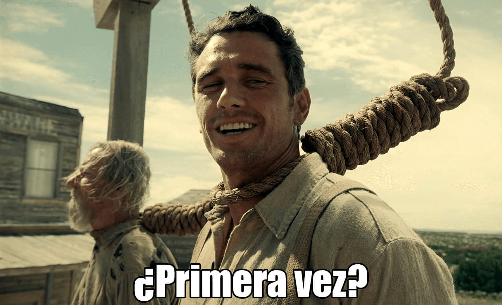

El juego del ahorcado es un divertido desafío en el que tendrás que adivinar una palabra oculta que te proporciona el ordenador. El objetivo del juego es descubrir la palabra antes de quedarte sin vidas.El juego empieza nada mas estes en la pagina, pero para que te den la palabra a adivinar tendras que darle a "nueva palabra". Cada vez que elijas una letra incorrecta, perderás una vida, y si pierdes 6 vidas en total, perderás el juego. Si logras adivinar una palabra correctamente, obtendrás 2 puntos. Sin embargo, para avanzar a la siguiente palabra, deberás presionar el botón de "Nueva Partida" o "Reiniciar". Ten en cuenta que si eliges reiniciar el juego, obtendras otra palabra automaticamente y perderás todos los puntos acumulados hasta ese momento. Además, es importante tener en cuenta el factor tiempo. Si el tiempo se agota, no podrás seguir acumulando puntos y deberás iniciar una nueva partida para intentar nuevamente superar tu record. ¡Buena suerte y diviértete tratando de adivinar las palabras ocultas en el juego del ahorcado!
Historia del Juego del Ahorcado
Los orígenes de El Ahorcado son oscuros, pero al parecer surgió en la época victoriana," dice Tony Augarde
autor de La Guía de Oxford de Juegos de palabras" (Oxford University Press).
Curiosidades del Juego
El juego del ahorcado también se conoce como "el hombre ahorcado" o "el ahorcado".
Algunas versiones del juego utilizan un dibujo completo de una persona, mientras que otras utilizan un gallo
o
cualquier otro dibujo.
¿Es la primera vez?

¿Quieres empezar a jugar ya? Veremos si eres digno...
¿Qué día fue el último ahorcamiento en España?